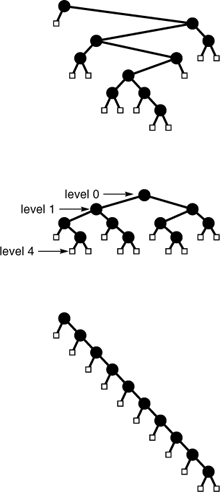
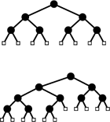

C++ Programming Robert Sedgewick - Princeton University Addison Wesley Professional Algorithms in C++, Parts 1–4: Fundamentals, Data Structure, Sorting, Searching, Third Edition
5.5. Mathematical Properties of Binary Trees
Before beginning to consider tree-processing algorithms, we continue in a mathematical vein by considering a number of basic properties of trees. We focus on binary trees, because we use them frequently throughout this book. Understanding their basic properties will lay the groundwork for understanding the performance characteristics of various algorithms that we will encounter—not only of those that use binary trees as explicit data structures, but also of divide-and-conquer recursive algorithms and other similar applications.
Property 5.5. A binary tree with N internal nodes has N+ 1 external nodes|
We prove this property by induction: A binary tree with no internal nodes has one external node, so the property holds for N = 0. For N > 0, any binary tree with N internal nodes has k internal nodes in its left subtree and N – 1 – k internal nodes in its right subtree for some k between 0 and N – 1, since the root is an internal node. By the inductive hypothesis, the left subtree has k + 1 external nodes and the right subtree has N – k external nodes, for a total ofN + 1.
|
Property 5.6. A binary tree with N internal nodes has 2N links: N – 1 links to internal nodes and N + 1 links to external nodes|
In any rooted tree, each node, except the root, has a unique parent, and every edge connects a node to its parent, so there are N – 1 links connecting internal nodes. Similarly, each of the N + 1 external nodes has one link, to its unique parent.
|
The performance characteristics of many algorithms depend not just on the number of nodes in associated trees, but on various structural properties.
Definition 5.6. The level of a node in a tree is one higher than the level of its parent (with the root at level 0). The height of a tree is the maximum of the levels of the tree's nodes. Thepath length of a tree is the sum of the levels of all the tree's nodes. Theinternal path length of a binary tree is the sum of the levels of all the tree's internal nodes. Theexternal path length of a binary tree is the sum of the levels of all the tree's external nodes|
A convenient way to compute the path length of a tree is to sum, for all k, the product of k and the number of nodes at level k.
These quantities also have simple recursive definitions that follow directly from the recursive definitions of trees and binary trees. For example, the height of a tree is 1 greater than the maximum of the height of the subtrees of its root, and the path length of a tree with N nodes is the sum of the path lengths of the subtrees of its root plus N – 1. The quantities also relate directly to the analysis of recursive algorithms. For example, for many recursive computations, the height of the corresponding tree is precisely the maximum depth of the recursion, or the size of the stack needed to support the computation.
|
Property 5.7. The external path length of any binary tree with N internal nodes is 2N greater than the internal path length.|
We could prove this property by induction, but an alternate proof (which also works for Property 5.6) is instructive. Observe that any binary tree can be constructed by the following process: Start with the binary tree consisting of one external node. Then, repeat the following N times: Pick an external node and replace it by a new internal node with two external nodes as children. If the external node chosen is at level k, the internal path length is increased by k, but the external path length is increased by k + 2 (one external node at level k is removed, but two at level k + 1 are added). The process starts with a tree with internal and external path lengths both 0 and, for each of N steps, increases the external path length by 2 more than the internal path length.
|
Property 5.8. The height of a binary tree with N internal nodes is at least lg N and at most N – 1.|
The worst case is a degenerate tree with only one leaf, with N – 1 links from the root to the leaf (see Figure 5.23). The best case is a balanced tree with 2i internal nodes at every level i except the bottom level (see Figure 5.23). If the height is h, then we must have
The binary tree shown at the top has height 7, internal path length 31 and external path length 51. A fully balanced binary tree (center) with 10 internal nodes has height 4, internal path length 19 and external path length 39 (no binary tree with 10 nodes has smaller values for any of these quantities). A degenerate binary tree (bottom) with 10 internal nodes has height 10, internal path length 45 and external path length 65 (no binary tree with 10 nodes has larger values for any of these quantities).

|
2h – 1 < N + 1  2h, 2h,
since there are N + 1 external nodes. This inequality implies the property stated: The best-case height is precisely equal to lg N rounded up to the nearest integer.
|
Property 5.9. The internal path length of a binary tree with N internal nodes is at least N lg(N/4) and at most N(N – 1)/2.|
The worst case and the best case are achieved for the same trees referred to in the discussion of Property 5.8 and depicted in Figure 5.23. The internal path length of the worst-case tree is 0+1+2+. . .+(N – 1) = N(N – 1)/2. The best case tree has (N + 1) external nodes at height no more than [lg N]. Multiplying these and applying Property 5.7, we get the bound (N + 1)[lg N] – 2N < N lg(N/4).
|
As we shall see, binary trees appear extensively in computer applications, and performance is best when the binary trees are fully balanced (or nearly so). For example, the trees that we use to describe divide-and-conquer algorithms such as binary search and mergesort are fully balanced (see Exercise 5.74). In Chapters 9 and 13, we shall examine explicit data structures that are based on balanced trees.
These basic properties of trees provide the information that we need to develop efficient algorithms for a number of practical problems. More detailed analyses of several of the specific algorithms that we shall encounter require sophisticated mathematical analysis, although we can often get useful estimates with straightforward inductive arguments like the ones that we have used in this section. We discuss further mathematical properties of trees as needed in the chapters that follow. At this point, we are ready to move back to algorithmic matters.
Exercises |  5.68 How many external nodes are there in an M-ary tree with N internal nodes? Use your answer to give the amount of memory required to represent such a tree, assuming that links and items require one word of memory each. 5.68 How many external nodes are there in an M-ary tree with N internal nodes? Use your answer to give the amount of memory required to represent such a tree, assuming that links and items require one word of memory each.
| | | | 5.69 Give upper and lower bounds on the height of an M-ary tree with N internal nodes. | |  5.70 Give upper and lower bounds on the internal path length of an M-ary tree with N internal nodes. 5.70 Give upper and lower bounds on the internal path length of an M-ary tree with N internal nodes.
| | 5.71 Give upper and lower bounds on the number of leaves in a binary tree with N nodes. | |  5.72 Show that if the levels of the external nodes in a binary tree differ by a constant, then the height is O(log N). 5.72 Show that if the levels of the external nodes in a binary tree differ by a constant, then the height is O(log N).
| | 5.73 A Fibonacci tree of height n > 2 is a binary tree with a Fibonacci tree of height N – 1 in one subtree and a Fibonacci tree of height n – 2 in the other subtree. A Fibonacci tree of height 0 is a single external node, and a Fibonacci tree of height 1 is a single internal node with two external children (see Figure 5.14). Give the height and external path length of a Fibonacci tree of height N, as a function of N, the number of nodes in the tree. | | 5.74 A divide-and-conquer tree of N nodes is a binary tree with a root labeled N, a divide-and-conquer tree of [N/2] nodes in one subtree, and a divide-and-conquer tree of [N/2] nodes in the other subtree. (Figure 5.6 depicts a divide-and-conquer tree.) Draw divide-and-conquer trees with 11, 15, 16, and 23 nodes. | | 5.75 Prove by induction that the internal path length of a divide-and-conquer tree is between N lg N and N lg N + N. | | 5.76 A combine-and-conquer tree of N nodes is a binary tree with a root labeled N, a combine-and-conquer tree of [N/2] nodes in one subtree, and a combine-and-conquer tree of [N/2] nodes in the other subtree (see Exercise 5.18). Draw combine-and-conquer trees with 11, 15, 16, and 23 nodes. | | 5.77 Prove by induction that the internal path length of a combine-and-conquer tree is between N lg N and N lg N + N. | | 5.78 A complete binary tree is one with all levels filled, except possibly the final one, which is filled from left to right, as illustrated in Figure 5.24. Prove that the internal path length of a complete tree with N nodes is between N lg N and N lg N + N. |
When the number of external nodes is a power of 2 (top), the external nodes in a complete binary tree are all at the same level. Otherwise (bottom), the external nodes appear on two levels, with the internal nodes to the left of the external nodes on the next-to-bottom level.

|